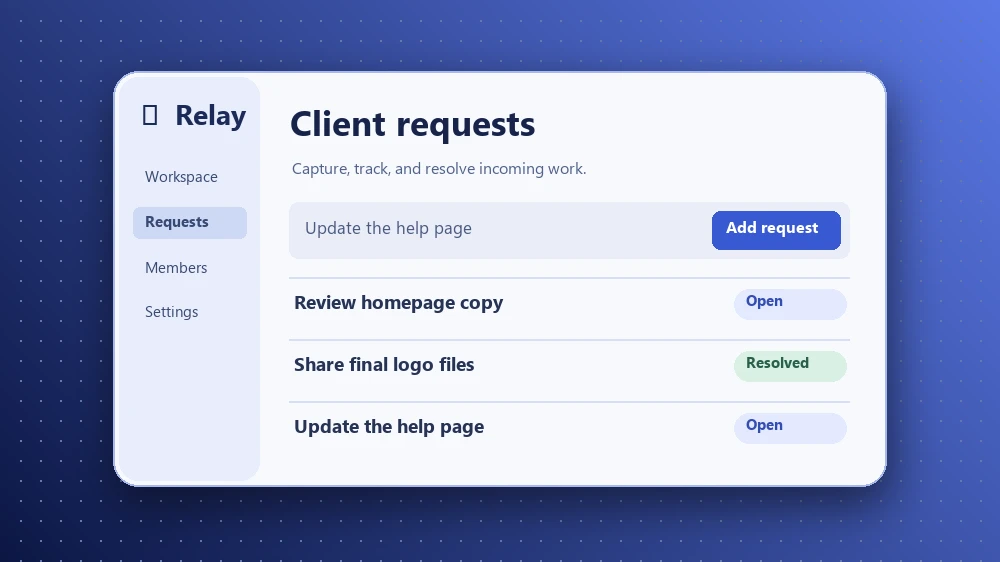

Design approach
Start with one required field so a client can file a request quickly. On the same screen, the team can scan open requests and see which ones are resolved.
Demonstration project / Full-stack design
A client request workspace for small teams that need one place to capture incoming work and see what has been resolved.

Start with one required field so a client can file a request quickly. On the same screen, the team can scan open requests and see which ones are resolved.
A React workspace would read and update requests through a Node.js API. PostgreSQL would store workspaces, members, and requests, with workspace-level access enforced for each read and update.
Add a sample request, then mark it resolved. This browser demo resets when you refresh.